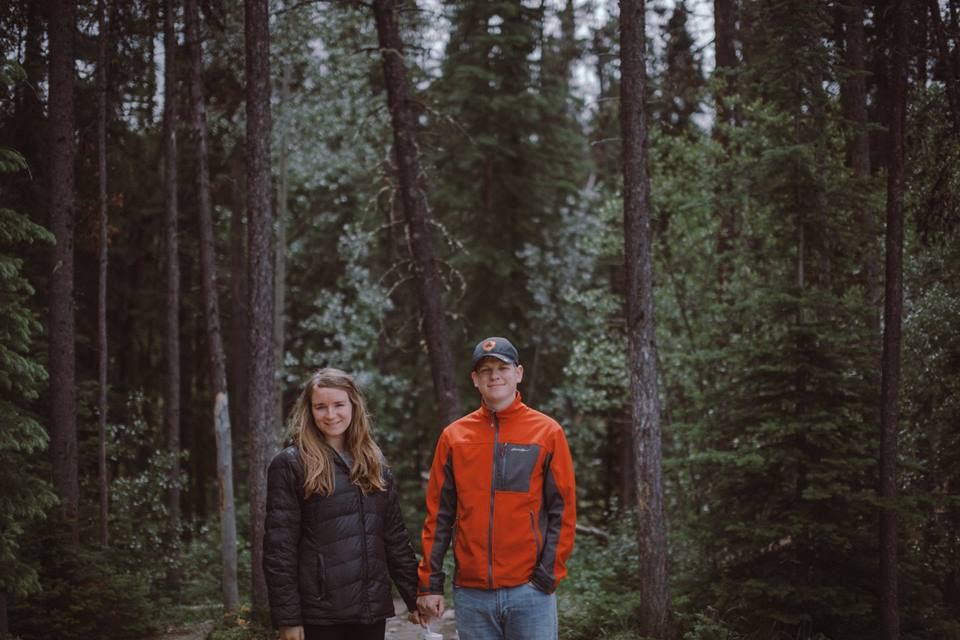
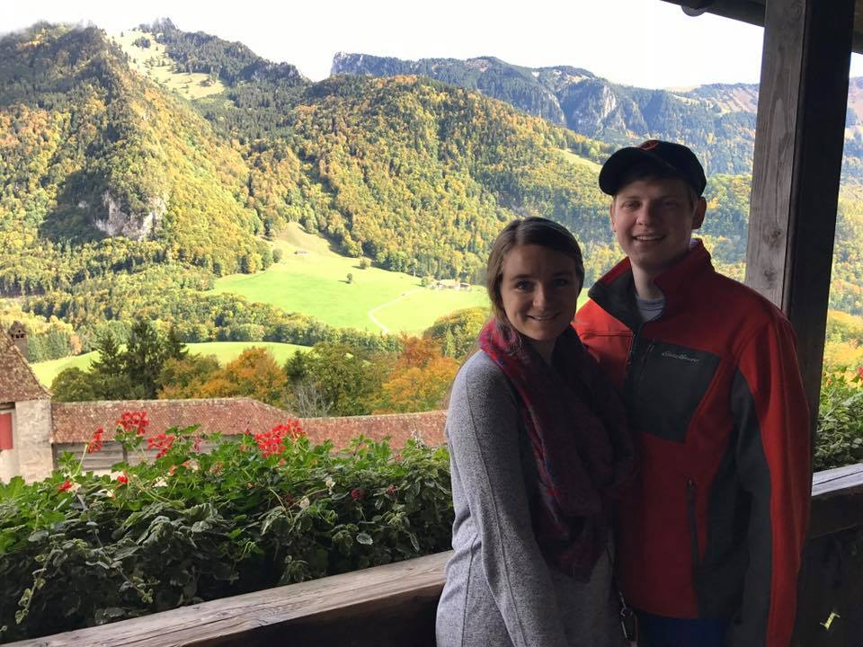
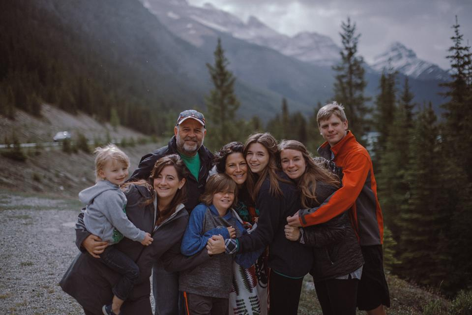

My name is Kyra Dornish. I'm a midwestern girl who moved to the DC area a little over a year ago. I have a wonderful husband, Tommy, and 3 mischievous cats.
I graduated from the University of Nebraska-Lincoln in 2013 with a bachelors in Psychology and 2015 with a masters in International Family Studies. From there I started working in customer support at Hudl, a sports technology company, in Lincoln, NE. I moved into a role on the Facilities team at Hudl then moved to DC for an opportunity to manage the Facilities team at International Justice Mission.
Some of my hobbies include:
I took a web development course in college and really enjoyed it, but didn't have enough skill to puruse it as a career. Moving to DC has given me the opportunity to learn how to become a developer through a bootcamp. And I consider starting a family, I want to be in a career I love. I am excited to give this long time interest a try and set my family up well for the future!
